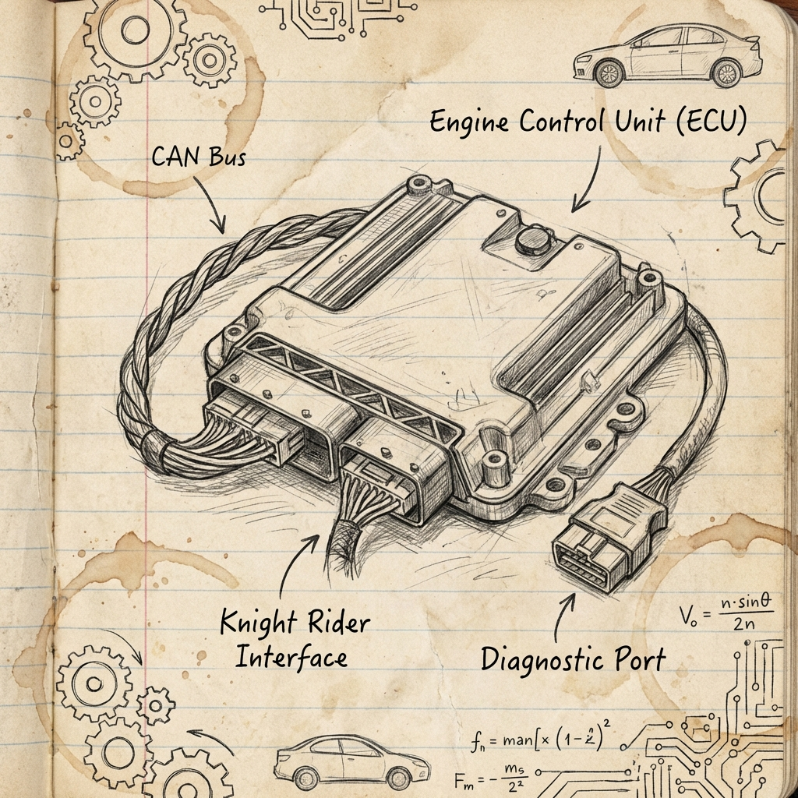

The Mission
In Zimbabwe, auto-diagnostics is a walled garden. Prohibitive import costs mean consumers and local shops are locked out of their own engine's intelligence.
This is so much that diagnostics still exists as a separate layer in the industry.
This is just an information problem.
KnightRider is the compressed embodiment of that layer. A Rust service on a Raspberry Pi reads OBD-II via a CAN HAT. A Flutter mobile dashboard shows live engine telemetry on your phone the moment you connect to the Pi's WiFi. When the phone is back online, it carries the trip's data to a cloud service that runs a research-grade genetic program against it — discovering new fault signatures specific to each car as more miles accumulate.



What's Shipped
- ✓ Rust Pi service (OBD-II + LAN server)
- ✓ Flutter mobile app (Android)
- ✓ Cloud ingest (FastAPI on Railway)
- ✓ End-to-end Pi → phone → cloud
- ◐ Live in-car testing (now)
The Research
The product is the front half. The back half is a research program on unsupervised fault detection via reliability-aware typed genetic programming. Validated across nine experiments in four physical domains — mechanics, vibration, automotive, aerospace, cardiology — with two outright wins on NASA benchmarks.
- +19.2 hours earlier bearing-failure detection than baseline on the NASA/IMS run-to-failure dataset.
- +2.2% earlier turbofan degradation detection across all 100 engines on NASA C-MAPSS FD001 — with a novel finding: coolant bleed flows act as the leading indicator of HPC degradation.
- 6 of 6 physics terms rediscovered from a damped pendulum from raw signals alone, with zero fault labels.
- The sensitivity-stability paradox — a publishable theorem about when rank-correlation tests fail because the framework worked.
Same algorithm runs on the cloud side of KnightRider, looking at each car's accumulating OBD-II traces and proposing new fault signatures for the Pi to deploy.
Headline Numbers
- 9 experiments
- 4 physical domains
- 5/6 real-world wins or ties
- 2 NASA-benchmark wins
- arXiv preprint drafted
The Road So Far
From scaffolding to in-car testing.
The Scaffolding
Rust core. CAN bus + ISO-TP + OBD-II layers. SocketCAN bindings, ring-buffer logging.
Hardware Sourced
Raspberry Pi 5 (4GB) + Waveshare 2-CH CAN HAT. Bench-verified with vcan and a real OBD-II port.
Three-Tier System
Pi service (Rust + tokio + axum) talks to a Flutter app over LAN. App carries trip batches to FastAPI cloud on Railway. End-to-end, idempotent, durable.
Research Validated
9 typed-GP experiments shipped. 5/6 real-world wins or ties. NASA IMS +19.2h, NASA C-MAPSS +2.2% earlier across 100/100 engines. Paper drafted. Interactive showcase live.
Field Testing
In-car CAN read, phone gets live dashboard on the Pi's WiFi, cloud receives trip batches. Iterating on real OBD signatures with the team.
The system is live. The research is published. The cars are queueing up.
If you're a Zimbabwean shop, a fleet operator, a researcher, an investor, or you just want to follow the build — here's where to do it.